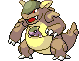
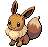
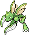

Three directions for the home screen
All three answer the same two complaints: the sprite is now the biggest thing on the page, and the tasks get their own half of the screen instead of a squeezed column. What separates them is how much of the Safari Zone fiction leaks into the chrome.
Static HTML, fake data, nothing wired up. Everything down to the Baoba intro is on the page — hit ▶ First-run intro in the bottom corner of any of them.

A · Field Station
The left half is a window onto the reserve — real HGSS Safari Zone art, sun and vignette, tall grass in the foreground, the Pokémon standing in it at 300px+ with a carved wooden nameplate sunk into the bottom of the scene.
The right half is the Ranger's field sheet: a clipboard, lined paper, jobs ticked off in circles, OVERDUE stamped in red.
- Most "place"-feeling of the three
- Game art used as scenery, not as UI
- Warm mid-tone; furthest from the current light theme
B · Safari Gear
The unapologetic one. The whole app is a game screen: the rounded green panels lifted off the HGSS Safari Zone menu, the classic white-on-black dialogue boxes, a battle-style status box, scanlines, pixel type. Happiness has no number at all — just a pixel-drawn face in the corner, tiered by how many quiet days are banked; bond is the only bar. Click the face to page through the five tiers and watch Baoba's line change with it.
The task list is a menu — ▶ cursor, section headers, and a description box at the bottom that updates as the cursor moves. Baoba speaks from a real dialogue box. Hover the rows.
- Directly borrows a real Pokémon screen, as asked
- Highest personality, lowest legibility at long task lists
- Dark green; would replace the light theme outright

C · Field Log
No game chrome at all. The sprite floats in a bond ring over a barely-there blur of the reserve, a serif name, three honest readouts, and the branching evolve picker as real buttons.
Tasks get a true half: hairline groups, a large hit target per row, an inline composer. The fiction lives entirely in the words and in Baoba's line in the header.
- Keeps the existing light-theme decision intact
- Scales best as the list grows
- Least "Pokémon" of the three
Reskins of B
Same chrome to the byte — the only CSS that differs is the background URL. Different area, Pokémon, tasks and dialogue, and each one parked on a different state of the loop, which is the part worth looking at.

B2 · The Forest
Mid-progress and comfortable: bond 5 of 7, so the corner box is a research note rather than an evolve prompt, and the mood face is beaming. No overdue group at all — this is what a good week looks like.

B3 · The Marshland
The bad state, which none of the other mockups show: 0 of 4 points, three jobs overdue, the mood face pulsing on restless, and the corner box turned into a warning. Baoba is not being gentle about it.
Both are generated by
make-variants.py in this folder, which copies b-safari-gear.html
and swaps only the content. Change B's design and re-run it rather than editing three
files by hand.
What's identical across all three
| Concern | Treatment |
|---|---|
| Sprite size | 244–372px, animated, always the largest element on the page (was 96px) |
| Task column | ~45–50% of the width, its own scroll region, never below the fold on desktop |
| Buckets | Overdue / Today / Tomorrow / Later, with Overdue as the only alarm state and hidden entirely when empty (B2 has none) |
| Done | Collapsed, read-only, grouped by day — terminal, per ADR-0002 |
| Readouts | Happiness, bond (against its requirement), today's points against target |
| Baoba | First-run modal, plus a persistent way back into it |
Notes worth knowing before you pick
The sprites are not the ones the app ships. These use animated Gen-5
sprites (79×61 and up) from Pokémon Showdown because a still 96×96 FRLG sprite scaled to
300px looks like a mistake. public/species/ currently holds the static ones —
adopting any of these means adding an animated set. Mockup C's evolve picker does use the
repo's real 96×96 sprites at thumbnail size, which is the right use for them.
Baoba is real. public/npc/baoba-hgss.png is his actual
HGSS overworld sprite, pulled from Bulbagarden Archives — he is the Johto Safari Zone's
warden, not the Fuchsia one, which is why it's a DS-era sprite. baoba-gen3.png
and baoba-gen1.png are there too if a chunkier look suits better.
A and B abandon the light theme that globals.css commits
to ("Poke Tracker is a light-theme app by specification"). That's a real decision, not a
detail — C is the only one that keeps it.
Vocabulary. These say Ranger, and the domain still says
Trainer. See the open questions in docs/setting.md — worth running
through /domain-modeling before any of this reaches the code.